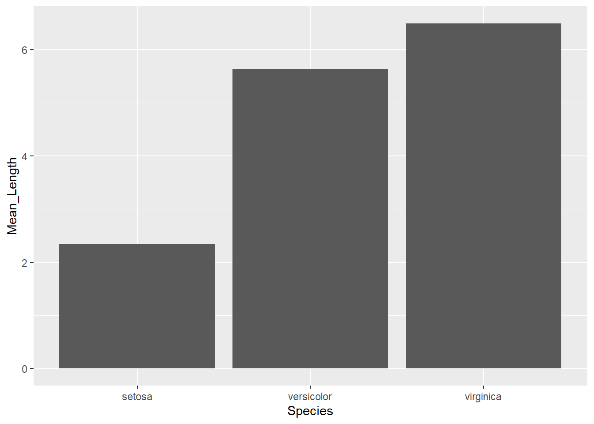

Chapter 3 Managing the data
Now, in R you can manage your dataframe as you please. You can do anything. And I truly mean anything. Anything you can do in Excel and then some.
3.1 Classes, Types and Structures
The data you imported can be in a wide range of classes (types). There are 3 basic types of classes, built-in (different functions can use more), you need to be aware (altough there are more). These are:
- character: strings (words), such as
"hello"or"hi123".
- numeric: any type of number, such as
2or30.4.
- logical: The true or false values.
TRUEorFALSE.
You can ask R about what type of object it is by using the class(object) command or the typeof(object)
R also has different data structures. The ones worth talking about here are:
- atomic vector: Basically every R data structure. A vector could be a character or an numeric object, for instance.
- lists: a list of objects. Can be created by using
list(). You can retrieve the value by using[[]]. - matrix: are like tables.
- data frame: fancy matrices (more common)
- factor: more of a type of class than anything. This object is a factor with levels.
- tibble: a special data frame from tidyverse
https://swcarpentry.github.io/r-novice-inflammation/13-supp-data-structures/
3.2 Columns
Lets start by some simply manipulations. Lets say you want to change column names. Ideally, I would avoid spaces in the headers (and overall actually) but you do as you please.
df <- iris # mtcars is a built-in dataset. Just imagine I'm reading from a file
# Option 1
colnames(df) <- c('Colname 1', 'Colname 2', 'Colname 3', 'Colname 4', 'Colname 5')
# Option 2
names(df) <- c('Colname 1', 'Colname 2', 'Colname 3', 'Colname 4', 'Colname 5')
# Or just change a specific column name
colnames(df)[2] <- 'Colname 2 - New'
# Finale result
head(df)## Colname 1 Colname 2 - New Colname 3 Colname 4 Colname 5
## 1 5.1 3.5 1.4 0.2 setosa
## 2 4.9 3.0 1.4 0.2 setosa
## 3 4.7 3.2 1.3 0.2 setosa
## 4 4.6 3.1 1.5 0.2 setosa
## 5 5.0 3.6 1.4 0.2 setosa
## 6 5.4 3.9 1.7 0.4 setosaWe can also change the order of the columns.
df <- df[,c(3,2,1,4,5)]We can sort by a specific (or multiple columns).
df <- iris # Just restoring the dataframe to be less confusing
df <- df[order(df[, 1]), ] # Orders by first column
df <- df[order(-df[, 1]), ] # Orders by first column descending
df <- df[order(-df[, 1], df[, 3]), ] # Orders by first columns descending and then by third columnWe can create new columns.
new_data <- rep('New Data', nrow(df)) # Creating new irrelevant data
df$NewColumn <- new_data # Added this data (data must have same length as dataframe!)
head(df)## Sepal.Length Sepal.Width Petal.Length Petal.Width Species NewColumn
## 132 7.9 3.8 6.4 2.0 virginica New Data
## 136 7.7 3.0 6.1 2.3 virginica New Data
## 118 7.7 3.8 6.7 2.2 virginica New Data
## 123 7.7 2.8 6.7 2.0 virginica New Data
## 119 7.7 2.6 6.9 2.3 virginica New Data
## 106 7.6 3.0 6.6 2.1 virginica New DataHow to remove columns.
df$Petal.Length <- NULL
# or
df <- within(df, rm(Sepal.Length))We can create and transform the columns.
df <- iris
df$Sepal_Area <- df$Sepal.Length * df$Sepal.Width # Creating new variable with is the multiplication of the first 2.
head(df)## Sepal.Length Sepal.Width Petal.Length Petal.Width Species Sepal_Area
## 1 5.1 3.5 1.4 0.2 setosa 17.85
## 2 4.9 3.0 1.4 0.2 setosa 14.70
## 3 4.7 3.2 1.3 0.2 setosa 15.04
## 4 4.6 3.1 1.5 0.2 setosa 14.26
## 5 5.0 3.6 1.4 0.2 setosa 18.00
## 6 5.4 3.9 1.7 0.4 setosa 21.06df$Sepal_Area <- round(df$Sepal_Area, 1) # Transforming existing variable, making it just 1 decimal.
head(df)## Sepal.Length Sepal.Width Petal.Length Petal.Width Species Sepal_Area
## 1 5.1 3.5 1.4 0.2 setosa 17.8
## 2 4.9 3.0 1.4 0.2 setosa 14.7
## 3 4.7 3.2 1.3 0.2 setosa 15.0
## 4 4.6 3.1 1.5 0.2 setosa 14.3
## 5 5.0 3.6 1.4 0.2 setosa 18.0
## 6 5.4 3.9 1.7 0.4 setosa 21.13.3 Rows
Altering specific rows is a bit trickier. Nevertheless, this is usually less relevant, since we usually just want to change or apply a condition to an entire column. Having said this, here’s some relevant commands.
Say you want to alter rows that meet a condition.
df$Sepal.Length[df$Sepal.Length <= 5] <- 0 # Any row in the Sepal.Length column less than five will turn to 0
df$Sepal.Length[df$Sepal.Length == 7.9] <- 8 # Changing rows with 7.9 to 8. How to create a new entry (i.e., row).
row <- data.frame(5.6, 3.2, 1.9, 0.1, 'new_species', 10000) # Create a new row (all columns must be filled)
colnames(row) <- colnames(df)
df <- rbind(df, row)
tail(df)## Sepal.Length Sepal.Width Petal.Length Petal.Width Species Sepal_Area
## 146 6.7 3.0 5.2 2.3 virginica 20.1
## 147 6.3 2.5 5.0 1.9 virginica 15.8
## 148 6.5 3.0 5.2 2.0 virginica 19.5
## 149 6.2 3.4 5.4 2.3 virginica 21.1
## 150 5.9 3.0 5.1 1.8 virginica 17.7
## 151 5.6 3.2 1.9 0.1 new_species 10000.0How to delete a row.
df <- df[-c(151, 152),]3.4 Tidyverse
Tidyverse allows us to do lots of things in a useful and simple way. Lets explore some of its several commands. More than ever, tidyverse is useful here. Lets load it first.
library(tidyverse)## -- Attaching packages --------------------------------------- tidyverse 1.3.1 --## v ggplot2 3.3.5 v purrr 0.3.4
## v tibble 3.1.5 v dplyr 1.0.7
## v tidyr 1.1.4 v stringr 1.4.0
## v readr 2.0.1 v forcats 0.5.1## -- Conflicts ------------------------------------------ tidyverse_conflicts() --
## x dplyr::filter() masks stats::filter()
## x dplyr::lag() masks stats::lag()Now, lets say we want to filter the dataframe.
We can arrange the dataframe as we wish. We can sort by just 1 column or more. In the latter case the second, third and so on variables will break the ties. Missing values are sorted to the end.
Another useful trick is to select columns. With this command we can select the columns we want, or do not want.
To create new columns, we can also use mutate. This a versatile command that allows you to do several things. Here are a bunch of examples:
We can also create summaries of the data with the command summarise().
head(df)## Sepal.Length Sepal.Width Petal.Length Petal.Width Species Sepal_Area
## 1 5.1 3.5 1.4 0.2 setosa 17.8
## 2 0.0 3.0 1.4 0.2 setosa 14.7
## 3 0.0 3.2 1.3 0.2 setosa 15.0
## 4 0.0 3.1 1.5 0.2 setosa 14.3
## 5 0.0 3.6 1.4 0.2 setosa 18.0
## 6 5.4 3.9 1.7 0.4 setosa 21.1# Summarising mean Sepatl.length by species
df %>%
group_by(Species) %>% # Grouping by this variable
summarise(Mean_By_Species = mean(Sepal.Length))## # A tibble: 3 x 2
## Species Mean_By_Species
## <fct> <dbl>
## 1 setosa 2.34
## 2 versicolor 5.64
## 3 virginica 6.49You can group by more than one factor and ask for other summaries, such as median, sd, and other basic operations. For instance:
df %>%
group_by(Species) %>%
summarise(count = n()) # Gives you the number of entries in each group## # A tibble: 3 x 2
## Species count
## <fct> <int>
## 1 setosa 50
## 2 versicolor 50
## 3 virginica 50You can then build operations on top of your summaries (like mutations or plots)
df %>%
group_by(Species) %>%
summarise(Mean_Length = mean(Sepal.Length)) %>%
ggplot(aes(Species, Mean_Length)) +
geom_col()
3.5 Missing Values
We have several ways of dealing with missing values NA (which mean “Not Available” by the way).
We can remove then, or omit them, depending on the situation. The important thing to note is that you ask R for certain commands. For instance, if you ask a mean of a column that contains NA the result will be NA. You can either a) specify na.rm = TRUE on the command (if the specific command allows you to do so), or just remove the NA values prior to running the command.
df$Sepal.Length <- as.numeric(df$Sepal.Length)
# Asking a mean with NA values
df %>%
summarise(Mean = mean(Sepal.Length))## Mean
## 1 NA# Removing NAs when asking the mean
df %>%
summarise(Mean = mean(Sepal.Length, na.rm=TRUE))## Mean
## 1 4.822667# Removing NAs then asking for the mean
df %>%
filter(!is.na(Sepal.Length)) %>%
summarise(Mean = mean(Sepal.Length))## Mean
## 1 4.8226673.6 Counts
Already mentioned above. Gives you the number of entries.
df %>%
group_by(Species) %>%
summarise(count = n())## # A tibble: 4 x 2
## Species count
## <fct> <int>
## 1 setosa 50
## 2 versicolor 50
## 3 virginica 50
## 4 new_species 13.7 Ungrouping
Lastly, you can use ungroup() in a pipe to ungroup whay you’ve did.
See tidyverse book page 107 for Exploratory Data Analysis